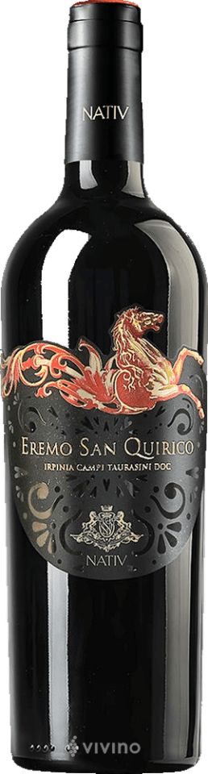
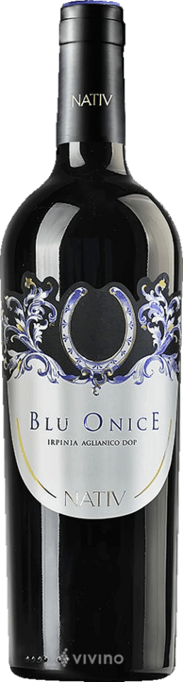

Podere Il Carnasciale – Il Carnasciale 2020
Identité
Région : Italie – Toscane · Cépage : Caberlot
Style : Élégant, complexe, tanins fins
Profil
Domaine toscan culte, Caberlot exclusif (croisement Cabernet Franc × Merlot). Très rare et recherché. Millésime 2020 sombre, épicé et sculpté.
Notes : 93 WA · 17+/20 JR · 93 JS · 93 PW
Dégustation
Couleur : Ruby quasiment encre
Nez : Cassis, prune, cerise noire, herbes sauvages, graphite, tabac, pointe de poivre
Bouche : Concentré, vertical, savoureux, minéral persistant, finale légèrement saline
Infos techniques
Vinification : Fermentation inox et bois, longue macération, élevage ~18 mois en barriques françaises
Classification : Toscana IGT · Garde : 10–15 ans
Carafage : 1h minimum · Température : 16–18°C
Accords : Viandes rouges, plats mijotés, cuisine toscane

Andrius Sauvignon Blanc Alto Adige DOC
Identité
Région : Italie – Alto Adige · Cépage : 60% Pinot Bianco, 30% Chardonnay, 10% Sauvignon
Style : Tendu, cristallin, aromatique
Profil
Pureté, fraîcheur, précision aromatique Alto Adige. Cantina Terlano (fondée 1893), référence de la région. Vinification sur lies prolongée pour grande longévité.
Notes : 95 JS · 93 PW
Dégustation
Couleur : Paille à reflets verts
Nez : Pomme verte, pêche blanche, mélisse, menthe
Bouche : Concentrée, fraîche, fort extrait, finale longue et saline
Infos techniques
Vinification : Sur lies prolongée — plusieurs années
Classification : Alto Adige DOC · Garde : 5–8 ans
Carafage : Non · Température : 9–11°C
Accords : Ceviche, sashimi, asperges, burrata, sole meunière, risotto aux herbes

Livio Felluga "Potentilla" Sauvignon Blanc
Identité
Région : Italie – Friuli Colli Orientali · Cépage : Sauvignon Blanc
Style : Large, profond, gastronomique
Profil
Cuvée mono-cépage, mono-parcelle (vigne 1975) lancée en 2018. Référence absolue du Frioul. Élevage plus travaillé, texture ample.
Notes : 94 JS · 93 PW
Dégustation
Couleur : Jaune paille clair, reflets verdâtres
Nez : Fleur de sureau, ortie, gardénia, pêche blanche, ananas, mangue, crème au citron
Bouche : Élégant, minéral, fruits mûrs, plus de texture qu'un simple Sauvignon inox
Infos techniques
Vinification : Macération sur peaux, fermentation en fûts avec malo
Classification : Friuli Colli Orientali DOC · Garde : 10–15 ans
Carafage : 30 min · Température : 10–12°C
Accords : Homard, lotte, risotto cèpes, turbot, ravioles aux herbes, vieux comté

Ridgeback Cabernet Franc 2020
Identité
Région : Afrique du Sud – Paarl · Cépage : Cabernet Franc
Style : Élégant, expressif
Profil
Cab Franc élégant de Paarl. Équilibre fruit rouge mûr, fraîcheur et épices raffinées. Accessible après aération, bon potentiel d'évolution.
Notes : 94 JS
Dégustation
Couleur : Rubis, rouge profond
Nez : Fruits rouges mûrs (cerise, baies), touches épicées
Bouche : Corps présent, tanins modérés, bon équilibre fruit/acidité
Infos techniques
Vinification : Maturation en barriques, mix de fûts différents âges
Garde : 3–7 ans · Carafage : 1h minimum · Température : 16–18°C
Accords : Viandes grillées, gibiers, fromages à pâte dure

Orpheus & Raven n°7 Pinotage 2022
Identité
Région : Simonsberg, Bottelary Hills, Durbanville · Cépage : Pinotage
Style : Nerveux, festif, intense
Profil
Pinotage haut de gamme moderne. 18 mois en barriques françaises et américaines. Profil profond, fruits noirs, violette, cacao, épices douces. Gagne fortement à être carafé.
Notes : 91 JS
Dégustation
Nez : Blueberry, framboise, mulberry, violette, lavande, chocolat noir, amande grillée, bois toasté
Bouche : Ronde, tannique élégant, bonne acidité, finale juvénile prometteuse
Infos techniques
Vinification : 18 mois en barriques (50% neuves)
Garde : 10–15 ans · Carafage : 1h · Température : 16–18°C
Accords : Viandes rouges, barbecue, côtes d'agneau, plats fumés

Vilafonté Seriously Old Dirt 2020
Identité
Région : Afrique du Sud – Western Cape
Cépage : 86% Cab Sauv · 8% Merlot · 4% Malbec · 2% Cab Franc
Style : Élégant, grand Bordeaux
Profil
Assemblage bordelais premium des sols anciens du Western Cape. Puissance maîtrisée, précision et profondeur. Encore dans sa jeunesse.
Notes : 91 JS
Dégustation
Nez : Cerise noire, prune, épices de boulangerie, vanille, tabac, noisette, réglisse
Bouche : Corsé, tanins présents mais mûrs, acidité soutenant la structure
Infos techniques
Garde : 10–15 ans · Carafage : 2–3h · Température : 16–18°C
Accords : Filet de bœuf Wellington, carré d'agneau au thym, civet de cerf, purée truffée

Salvatore M Barbaresco 2021
Identité
Région : Piémont · Cépage : Nebbiolo
Style : Structuré, floral, gastronomique
Profil
Style classique piémontais. Nebbiolo pur, structuré mais élégant, millésime 2021 réputé dans les Langhe. Gagnera à vieillir en cave quelques années.
Dégustation
Couleur : Rouge profond
Nez : Fleurs, fruits rouges, arômes tertiaires avec le temps
Bouche : Tanins fermes, légèrement asséchant, fraîcheur et longueur
Infos techniques
Classification : Barbaresco DOCG · Garde : 10–15 ans
Carafage : 2h+ · Température : 16–18°C
Accords : Viande rouge, ragù, volaille noble, plats piémontais, truffes

Fontanafredda Barolo Serralunga d'Alba 2019
Identité
Région : Piémont – Serralunga d'Alba · Cépage : Nebbiolo
Style : Puissant, raffiné, gastronomique
Profil
Commune de Serralunga, reconnue pour ses vins de garde. Élégance, puissance et potentiel – parfait pour un moment célébratoire.
Notes : 92 JS
Dégustation
Nez : Rose fanée, épices, vanille, sous-bois, cerise, réglisse, cacao
Bouche : Étonnamment velouté et harmonieux, bonne structure, finale persistante et élégante
Infos techniques
Garde : 10–15 ans · Carafage : 2h+ · Température : 18–20°C
Accords : Viandes rouges grillées ou braisées, gibier, sauces riches, fromages puissants

Domaine du Colombier Chablis 1er Cru "Fourchaume" 2022
Identité
Région : France – Chablis · Cépage : Chardonnay
Style : Minéral, fruité, tendu
Profil
Fourchaume, l'un des 1ers crus les plus réputés. Exposition sud, sols calcaires de haute qualité. Saveurs rondes de citron, pêche blanche et pamplemousse.
Notes : 92 JS
Dégustation
Couleur : Jaune aux reflets blanc-vert, limpide et vive
Nez : Généreux, tropical, citron, pamplemousse, fruits mûrs croquants
Bouche : Sec, « pierre à feu », très bonne longueur, minéralité fraîche
Infos techniques
Vinification : Méthodes bourguignonnes, inox, sans bois
Classification : Chablis 1er Cru AOC · Garde : 6–8 ans
Carafage : Non · Température : 10–12°C
Accords : Saint-Jacques, poissons en sauce, huîtres, fruits de mer, chèvre frais

Domaine Wach Gewurtzaminer "Cœur de Glace"
Identité
Région : France – Alsace · Cépage : Gewurztraminer
Style : Élégant, frais, moelleux
Profil
Cuvée rare du domaine, esprit vin de glace. Vendange avec raisins concentrés par gelée. Très expressif dès l'ouverture, laisser aérer 10–15 min.
Dégustation
Couleur : Blanc jaunâtre
Nez : Litchi, rose, fruits de la passion, mangue mûre, notes miellées, épices douces, touche citronnée
Bouche : Texture veloutée, bel équilibre sucrosité/acidité, finale longue légèrement épicée sur fruits exotiques confits
Infos techniques
Garde : 4–6 ans · Carafage : Non (laisser respirer dans le verre) · Température : 10–12°C
Accords : Foie gras, desserts aux fruits exotiques, tarte poire/abricot, fromages à pâte dure

Domaine Colbois Chablis 2023
Identité
Région : France – Chablis · Cépage : Chardonnay
Style : Minéral, pierre à fusil, aromatique
Profil
100% Chardonnay, inox, élevage sur lies fines. Robe paille, agrumes, minéralité caractéristique. Producteur respecté localement, style classique franc.
Dégustation
Nez : Pomme verte, zeste, citron, pamplemousse, pierre humide
Bouche : Attaque fraîche et vive, acidité bien tendue, finale saline
Infos techniques
Vinification : Cuves inox thermo-régulées, élevage sur lies fines
Classification : Chablis AOC · Garde : 2–5 ans
Carafage : Non · Température : 10–11°C
Accords : Fruits de mer, crustacés, fromage frais, tartare de saumon

Costa di Bussia – Campo dei Buoi 2016
Identité
Région : Piémont – Monforte d'Alba · Cépage : Nebbiolo
Style : Large, profond, gastronomique
Profil
Domaine fondé 1874 par Luigi Arnulfo (légende du Barolo). Vigna "Campo dei Buoi" dans la zone Bussia. 11 acres de Nebbiolo seulement. Élevage 30 mois en grands fûts slavons.
Dégustation
Couleur : Rouge profond
Nez : Cerise confite, griotte, rose fanée, violette, cuir, truffe, tabac, épices douces
Bouche : Tannique mais fondant, belle acidité fraîche, réglisse, goudron, terre humide, longue persistance
Infos techniques
Vinification : 30 mois en grands fûts de chêne slavon (5000 L), affinage en bouteille
Classification : Barolo DOC · Garde : 10–15 ans
Carafage : 2h+ · Température : 16–18°C

Tosone Nero d'Avola 2021
Identité
Région : Italie – Sicile · Cépage : Nero d'Avola
Style : Solaire, puissant, généreux
Profil
100% Nero d'Avola des collines siciliennes (300–500m). Style moderne : opulent, soyeux, extrêmement flatteur. Vin "gourmand" façon Bordeaux moderne.
Dégustation
Couleur : Rouge profond
Nez : Confiture de cerise noire, mûre, pruneau, vanille, chocolat noir, cacao, réglisse
Bouche : Opulent, charnu, dense, tanins souples et fondus, attaque ronde, légère sucrosité perçue, 14,5% bien enveloppés
Infos techniques
Vinification : 8 mois en barrique
Classification : Sicilia DOC · Garde : 3–7 ans
Carafage : 1h minimum · Température : 16–18°C
Accords : Viandes grillées, pâtes et sauces riches, fromages affinés et corsés

Domaine de l'Envol Pinot gris 2024
Identité
Région : France – Alsace · Cépage : Pinot gris
Style : Aromatique, frais
Profil
Pinot gris sec mais pas lourd. Profil aromatique dans sa jeunesse. Avec le temps, le terroir granitique apportera de la tension minérale.
Dégustation
À compléter après dégustation.
Infos techniques
Garde : 6–10 ans · Carafage : Non · Température : 9–12°C
Accords : Plats crémeux, champignons, plats épicés

Saint Véran – Stéphanie Saumaize
Identité
Région : France – Sud Mâconnais · Cépage : Chardonnay
Style : Soyeux, pur, équilibré
Profil
100% Chardonnay, vigneronne de grand talent. Rondeur bourguignonne + superbe tension. Charnu et enveloppant, soutenu par une fraîcheur calcaire, finale nette et briochée.
Dégustation
À compléter après dégustation.
Infos techniques
Garde : 8–10 ans · Carafage : Non · Température : 10–12°C
Accords : Poissons, volaille à la crème

Robinière-Raimbault "Bel-air" Vouvray 2023
Identité
Région : Loire – Vouvray · Cépage : Chenin Blanc
Style : Fraîcheur, minéralité, fruité
Profil
Expression classique du Chenin sur tuffeau et silex. Profil 2023 très pur : poire, pomme granny, verveine. Tension minérale saline très salivante.
Dégustation
À compléter après dégustation.
Infos techniques
Classification : Vouvray AOC · Garde : 5–10 ans
Carafage : Non · Température : 10–12°C

Nativ Eremo San Quirico 2019
Identité
Région : Campanie – Taurasi · Cépage : Aglianico
Style : Vieilles vignes, maturité, opulence
Profil
Vaisseau amiral de Nativ. Parcelle à Taurasi, sols volcaniques, vignes de +150 ans (rescapées du phylloxéra). Production microscopique, richesse aromatique incroyable.
Dégustation
Couleur : Quasi noire, reflets violacés denses
Nez : Cassis, mûre sauvage, cerise noire confite, vanille, chocolat noir, café torréfié, noix de coco, tabac doux
Bouche : Extrêmement dense, corsé, voluptueux, texture presque sirupeuse, tanins enrobés, finale longue et chaleureuse (~14,5–15%)
Infos techniques
Vinification : 12 mois en barriques neuves de chêne français
Classification : Irpinia Campi Taurasini DOC · Garde : 8–10 ans
Carafage : 2h+ · Température : 16–18°C
Accords : Viande rouge, ragù, magret de canard

Nativ Blue Onice 2020
Identité
Région : Campanie · Cépage : Aglianico
Style : Puissant, structuré, boisé et minéral
Profil
Aglianico surnommé "Barolo du Sud". Plus complexe et corpulent que l'entrée de gamme. Structure tannique affirmée, relief en bouche.
Dégustation
Couleur : Sombre, presque opaque
Nez : Fruits noirs mûrs, épices douces (poivre, réglisse), cacao, touche torréfiée de barrique
Bouche : Corsé, dense, riche matière, minéralité volcanique/calcaire, acidité qui étire la finale, tanins serrés et enveloppants
Infos techniques
Classification : Irpinia DOP · Garde : 5–10 ans
Carafage : 1h · Température : 16–18°C
Accords : Viande rouge, ragù, fromages affinés et puissants
Aucun vin ne correspond à votre recherche.